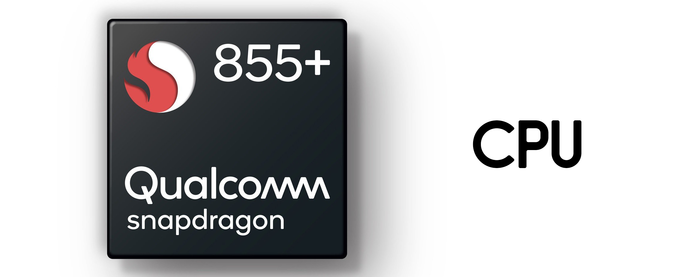

Torna alla Home Page
Specifiche del OnePlus 7T Pro
Componente
Valore
CPU
Snapdragon 855 Plus
RAM
8GB
ROM (Memoria Interna)
256GB
Schermo
6.67" 90Hz
Versione di Android
10 (Oxygen OS)
CPU

E' un componente fisico che serve a processare le informazioni.
Un buon processore consente di mantenere le performance generali ottimali, e garantire buone prestazioni di gioco
RAM
La memoria RAM serve al telefono a memorizzare dati in modo rapido temporaneamente.
Per prestazioni generali (e anche di gioco) ottimali, consiglio 3GB minimo.
Refresh rate
La Refresh Rate e' la frequenza di aggiornamento del display.
Uno schermo con refresh rate più alto garantisce più fluidità generale nelle app e nei giochi/video